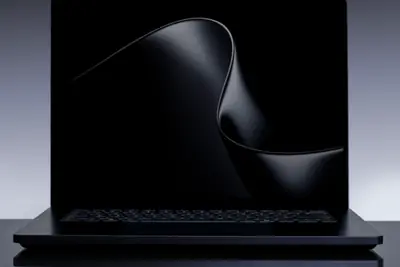
其他AI 每日新聞彙整
全部主題
其他
4 家媒體報導microsofteventwindows
NVIDIA, Microsoft Kick Off a New Beginning for Windows PCs With RTX Spark and AI Agents
At a Microsoft event in San Francisco on Wednesday, Jensen Huang and Satya Nadella outlined how NVIDIA and Microsoft are co-engineering hardware and software for AI agents to run on Windows PCs. NVIDIA was founded because of Windows, Huang said. Now AI agents are coming to Window
- Ars Technica AI Microsoft event debuts new AI-friendly hardware and Windows changes
- TechCrunch AI Microsoft releases new Nvidia-chip AI PCs with revamped Windows 11
- NVIDIA Blog NVIDIA, Microsoft Kick Off a New Beginning for Windows PCs With RTX Spark and AI Agents
- The Verge AI Everything announced at Microsoft’s Surface Laptop Ultra event
- The Verge AI Microsoft is giving Copilot more control over Windows and your files
4 家媒體報導spacexfunding400
【科技早餐】SpaceX 傳籌 400 億美元買 NVIDIA 晶片，AMD 將加碼台灣投資
【科技早餐】今天精選 7 則國內外重要科技新聞。 ＊SpaceX 傳籌 400 億美元買 NVIDIA 晶片，阿波羅主導融資安排 根據《路透社》引述知情人士的報導，馬斯克旗下的太空探索科技（SpaceX）正尋求約 400 億美元融資，用於採購輝達（NVIDIA）AI 晶片，預計由阿波羅全球管理公司（Apollo Global Management）主導。資金結構包含約 100 億美元銀行貸款與 300 億美元投資級債券，交易預計 2027 年完成。阿波羅將協助向不同投資人出售債券，債券投資機構 PIMCO 也參與融資洽談，惟安排尚未正式確認。 這項計畫延
4 家媒體報導chatgptopenaigetting
The New ChatGPT Is More Show Than Tell
OpenAI is updating ChatGPT for all users with an “Intelligent UI” that’s more visual—generating interactive elements as part of the chatbot’s outputs.
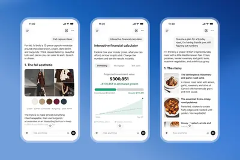
- The Verge AI ChatGPT’s ‘Intelligent UI’ update fills its responses with pictures, charts, and buttons
- TechCrunch AI ChatGPT is getting a lot more visual, with the launch of a new interface
- Wired AI The New ChatGPT Is More Show Than Tell
- The Verge AI ChatGPT is getting college planning tools
- OpenAI Radisson Hotel Group brings hotel discovery into ChatGPT
3 家媒體報導ipadmetamuse
Muse launches on the iPad
After launching nearly a month ago and spending several weeks as the top free app in Apple's App Store, the latest update to Meta's Muse iOS app introduces native support for the iPad. A Mac version of Meta's agentic AI tool (designed to compete with OpenClaw, ChatGPT's Dots, and
2 家媒體報導walmartstripemeta
Meta 再推 AI Agent 新標準 PAP，為什麼 Agent 協議越來越多？
AI Agent（AI 代理）的協議名單又變長了。Meta 與企業 AI 新創 Sierra 10/6 宣布，將聯合 Genesys、Instinct、Rocket、Shopify、Stripe、Walmart 等業者開發「Personal Agent Protocol（PAP）」，希望建立一套個人 AI Agent 與企業互動的共同標準，包括身分驗證、使用者授權，以及企業如何掌握 Agent 透過網站、API 或企業 Agent 執行的行動。 不過 AI Agent 相關的協議已經越來越多：MCP、A2A、UCP、ACP、AP2、TAP，如今又多了 P
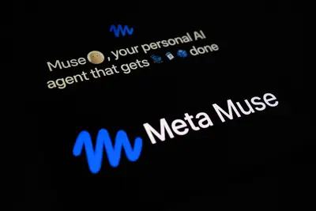
- DIGITIMES Meta攜Walmart、Stripe推AI代理標準 盼解決網站封鎖問題
- TechOrange 科技報橘 Meta 再推 AI Agent 新標準 PAP，為什麼 Agent 協議越來越多？
2 家媒體報導haiku5.50.50
Anthropic 最快、最便宜模型：Claude Haiku 5.5 登场，运行成本较 4.5 低约 75%
IT之家 10 月 8 日消息，Anthropic 昨日（10 月 7 日）发布博文，宣布推出 Claude Haiku 5.5 模型，称其为目前速度最快、最便宜、功能最强的 Haiku 系列小型模型。 定价方面，IT之家援引博文介绍，附上售价信息如下： 每 100 万 Token 的价格 Haiku 5.5（提示词不超过／超过 100k） Haiku 4.5 Sonnet 5.5 缓存读取 0.01 美元 （IT之家注：现汇率约合 0.067 元人民币） ／0.05 美元 （现汇率约合 0.34 元人民币） 0.10 美元 （现汇率约合 0.67 元人
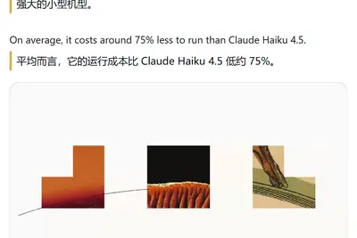
- IT之家 Anthropic 最快、最便宜模型：Claude Haiku 5.5 登场，运行成本较 4.5 低约 75%
- Simon Willison Claude Haiku 5.5
2 家媒體報導googleai-poweredplatform
Google invests millions in Mark Zuckerberg’s efforts to create a ‘virtual cell’
Google DeepMind, Meta, and AI drug discovery startup Isomorphic Labs are jointly investing $300 million into an initiative to create a "virtual cell" that researchers can use to combat disease, as reported earlier by Reuters. The project is led by Biohub, a nonprofit biomedical r
2 家媒體報導mistralchonkmodels
Mistral says "Le Chonk" can challenge the best AI models
Mistral says Le Chonk can rival top closed models while remaining open-weight.
- Ars Technica AI Mistral says "Le Chonk" can challenge the best AI models
- TechOrange 科技報橘 美中以外最強 AI 模型出現了，Mistral Large 4 靠 4,000 顆 Blackwell 怎麼追上來？
2 家媒體報導synthidgooglewebsite
Google’s new SynthID website can identify AI-generated media
Google on Tuesday launched a new site that lets anyone verify whether a piece of media, be it an image, a video, or an audio clip, is generated using AI.
2 家媒體報導teenslearncommon
ChatGPT for Teens is an ‘unacceptable risk,’ says Common Sense Media
Common Sense Media, a nonprofit that offers reviews of apps, services, and entertainment with a focus on youth safety, today said that OpenAI's ChatGPT for Teens is an "unacceptable risk." ChatGPT for Teens, introduced in August, has guardrails for teens and is designed to help s
modscodeclaude
Claude Code新功能Mods是什麼？安裝+自製4步驟一次解密：如何改出最順手的AI開發環境？
Claude Code新功能Mods讓你用一句話改造App的介面與運作方式。本文拆解它和Hooks的差別，4步驟教你安裝與自製，並提醒安全風險。
marvell2029funding
Marvell拋「七大類」AI週邊晶片成長性 瑞昱、群聯、信驊各有切入點
AI加速器客製化浪潮，從運算晶片本身外溢到週邊，Marvell舉行投資人日，將2029會計年度（至2029年1月底）的整體客製化AI晶片營收目標，從100億美元上調至120億美元左...
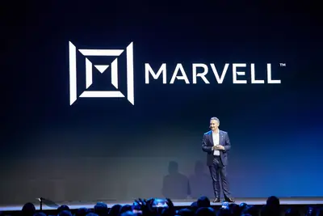
- DIGITIMES Marvell拋「七大類」AI週邊晶片成長性 瑞昱、群聯、信驊各有切入點
funding
AI改變電信流量成長邏輯 愛立信從數據探行動網路新課題
過去行動網路流量成長主要由影音串流等下行需求帶動，電信業者的網路投資也多數圍繞下行容量展開。隨著生成式AI、代理式AI（Agentic AI）與多模態互動逐漸普及，行動...
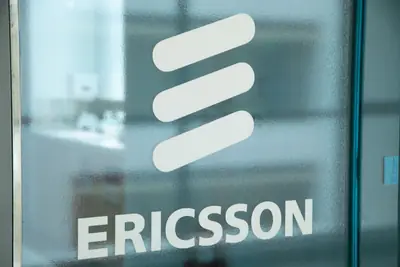
- DIGITIMES AI改變電信流量成長邏輯 愛立信從數據探行動網路新課題
cpuamd
AI代理引爆CPU新需求 超微成最大受惠贏家？
在生成式AI崛起並讓NVIDIA GPU稱霸市場前，中央處理器（CPU）曾是伺服器的運算主力。如今，隨著個人AI代理熱潮興起，CPU宣告強勢回歸，重新在AI領域扮演不可或...
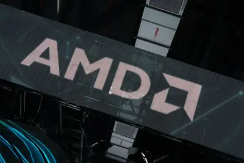
- DIGITIMES AI代理引爆CPU新需求 超微成最大受惠贏家？
huaweicomputeascend
昇騰中國市佔超車NVIDIA 華為徐直軍揭國內需求缺口仍大
中國AI算力競爭進入從單一晶片走向整體系統架構的新階段。華為輪值董事長徐直軍近日表示，從華為目前能夠取得的統計資料來看，昇騰（Ascend）AI晶片在中國市場仍不足...
- DIGITIMES 昇騰中國市佔超車NVIDIA 華為徐直軍揭國內需求缺口仍大
constructsipo1500
New Constructs 给 Anthropic 估值 1500 亿美元，称其“2026 年最荒唐 IPO”
北京时间 10 月 8 日，据 CNBC 报道，就在 Anthropic 即将登陆纳斯达克、冲击 2 万亿美元 （现汇率约合 13.42 万亿元人民币） 估值之际，一家研究机构却仅给予了这家 AI 公司 1,500 亿美元 （现汇率约合 1.01 万亿元人民币） 的估值，并表示华尔街即将面临“一场前所未有的考验，考验投资者有多容易上当”。 独立金融研究机构 New Constructs 在周二的一份报告中，把 Anthropic 即将进行的 IPO 称为“2026 年最荒唐的 IPO”。 该机构估算，Anthropic 若要达到其期望估值，其利润需要达到
botgrokspacexai
马斯克：Grok Bot 不再只认自家模型，按用户任务择优用 Claude 等最佳 AI
IT之家 10 月 8 日消息，全球首富埃隆 · 马斯克（Elon Musk）昨日（10 月 7 日）在 X 平台发布重要说明，宣布旗下 Grok Bot 不再局限于 SpaceXAI 自研的 Grok 系列模型， 将根据具体任务自动选择“最好的后端模型”。 马斯克在推文中展望未来，表示 Grok Bot 将会根据用户任务，调用包括 Claude Opus 5.5、Midjourney、Suno 以及其他领先 API，系统将以“最有可能给用户最佳结果”为标准进行选择。IT之家附上相关截图如下： 在技术策略方面，Grok Bot 将从“以自研 / 自有模型
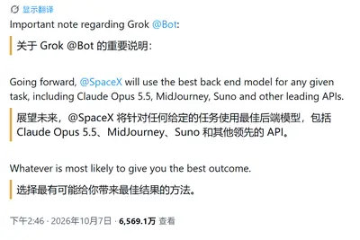
OpenAI 首份青少年报告：日均使用不足 15 分钟，安全提醒机制遭质疑
北京时间 10 月 8 日，OpenAI 周三发布了首份青少年使用情况报告，称青少年用户平均每天使用 ChatGPT 的时间不足 15 分钟，连续使用超过 3 小时的青少年用户占比不到 2%。与此同时，第三方机构的测试对其家长安全提醒机制提出了质疑。 随着 AI 平台迅速普及，聊天机器人对青少年心理健康和成长安全的影响日益受到关注。OpenAI 表示，在出现休息提醒的青少年对话中，近半数用户在随后 5 分钟内暂停使用或结束了聊天。公司以此说明，其引导青少年合理使用产品的措施正在发挥作用。 OpenAI 还称，能够使用青少年专属版本的用户发送了更多与教育有
likewhichquoting
Quoting Ben Affleck
I've always been kind of into computers since I was young. And then when film started to move from analog film to digital, I became more interested in that aspect of it. And the visual effects workflow for many years has included machine learning. So I can write like pretty shitt
- Simon Willison Quoting Ben Affleck
regulation
原 OpenAI 安全负责人戴维 · 罗宾逊“炮轰”老东家：对待 AI 安全说一套做一套
IT之家 10 月 8 日消息，据《商业内幕》今天（8 日）凌晨报道，上周从 OpenAI 离职的安全系统团队前负责人之一戴维 · 罗宾逊认为，公司在 AI 安全问题上存在明显的言行不一。 罗宾逊表示， OpenAI 一边反复警告新模型能力增强可能带来的风险，一边公开谈论放慢 AI 开发速度 ，公司内部却仍在全速推进。“真正让我感到矛盾的是，我们不断发布这些警告，最后却还是在训练和部署那些被我们自己警告存在危险的模型。” 今年 7 月，数百名 OpenAI 员工签署了一封公开信， 呼吁政府出台监管措施 ，为 AI 开发降速。 此前，Anthropic C
跨界與重構：智駕晶片的車載 AI 時代角力賽
新車銷售量停滯且電動化轉型放緩之際，智駕系統已成為車企競爭的核心焦點。2026 年全球新車市場的 L2 滲透率 […]
- 科技新報 TechNews 跨界與重構：智駕晶片的車載 AI 時代角力賽
195126.59samsung
三星电子 2026 财年第三财季营收 195 万亿韩元，同比增长 126.59%
IT之家 10 月 8 日消息，三星电子今日发布 2026 财年（2026 年 1 月～2026 年 12 月）第三财季（2026 年 7 月～2026 年 9 月）业绩快报报告： 营业总收入 ：195 万亿韩元 （IT之家注：现汇率约合 9668.1 亿元人民币） ，同比增长 126.59%，环比增长 13.7%。 营业利润 ：107.4 万亿韩元 （现汇率约合 5324.89 亿元人民币） ，同比增长 782.5%，环比增长 20.01%。 AI 解读 本次三星电子 2026 财年第三财季业绩超市场普遍预期，核心财务数据大幅超出券商预测区间。 公司主
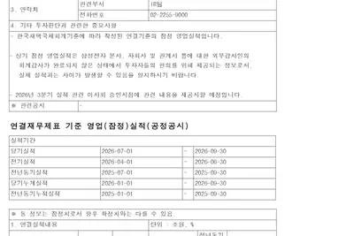
copilot
微软重构 Copilot 图标：升级动态交互语言，可表达思考、规划与检索
IT之家 10 月 8 日消息，微软设计（Microsoft Design）博客于 10 月 5 日发布博文， 介绍了新版 Copilot 图标的设计过程，将原有静态标识重构为由两个方形组成的动态系统。 新版 Copilot 图标由两个独立方形构成，二者可改变位置并共同形成完整轮廓。关于本次调整原因，微软设计团队表示 Copilot 的使用方式持续变化，原有静态图标难以传递处理状态，因此团队希望让图标参与产品交互。 新版图标以矩形作为基础形态，设计团队测试了不同的比例、角度与间距，最终保留两种既能独立识别、又能组合成整体的形式。IT之家附上相关视频如下：
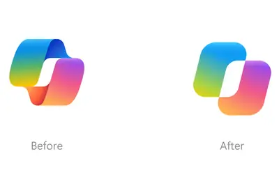
rtxsparkchip
华硕推出 ProArt P14/P16 笔记本：搭载英伟达 RTX Spark 超级芯片
IT之家 10 月 8 日消息，太平洋夏令时 10 月 7 日 11 点（北京时间 10 月 8 日凌晨 2 点）举办的活动中，华硕推出 ProArt RTX Spark AI PC 系列， 涵盖 ProArt P16、ProArt P14 笔记本及 ProArt GR1X 迷你主机，均搭载英伟达 RTX Spark 超级芯片。 图源：华硕官网 三款设备均基于 NVIDIA RTX Spark 平台，最高提供 1 PFLOP（FP4）AI 算力与最高 128GB 统一内存，可在本机直接运行大型语言模型、复杂 3D 渲染、内容生成与 AI Agents 工
800brilliantfactory
800+ AI 代理進駐 GE 家電廠房：員工開口就能問數據，欠單降 25%
AI 代理正在進入製造現場，GE 家電已在製造、物流與供應鏈營運中部署超過 800 個 AI 代理，並以 Google Cloud 的 Gemini Enterprise 作為技術基礎，將 AI 整合進名為「Brilliant Factory」的製造數據平台。這套平台追蹤各工廠生產表現、零件履歷，以及不同產線與班次的工作活動，讓現場員工可以直接與生產數據互動，加快問題診斷與決策速度。 GE 家電數位科技副總裁暨數位長 Mandar Deo 表示，AI 現在已經成為公司日常工作方式的一部分。 自動化協同 600 家供應商，欠單大幅降低 25% 在 Bril
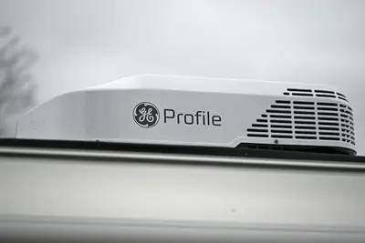
- TechOrange 科技報橘 800+ AI 代理進駐 GE 家電廠房：員工開口就能問數據，欠單降 25%
1.1codemai
GitHub Copilot 不再纯云端 AI 模型：Surface Laptop Ultra 本地推理吞吐量最高每秒 63 词元
IT之家 10 月 8 日消息，太平洋时间 10 月 7 日上午 10 点（北京时间 10 月 8 日凌晨 1 点）在美国旧金山举办的发布会中，微软宣布 GitHub Copilot 将在本月底前支持本地 AI 模型推理， 开发者可在云端模型与设备端模型之间自动或手动切换。 GitHub Copilot 是微软推出的 AI 编程助手，可集成于 Visual Studio Code、CLI 等工具，根据代码上下文生成补全、解释或重构建议。 GitHub Copilot 目前依赖云端托管模型，由协调器根据性能、成本与准确性路由请求。微软计划在本月底扩展该机制
10 年内预估仅 5%：诺奖经济学家背书，AI 不会大规模抢走你的饭碗
IT之家 10 月 8 日消息，微软 AI 首席执行官穆斯塔法 · 苏莱曼（Mustafa Suleyman）于 10 月 6 日在 X 平台发布推文，援引诺贝尔经济学奖得主达龙 · 阿西莫格鲁（Daron Acemoglu）的预测称， 未来 10 年内仅有约 5% 的人类工作会被人工智能取代。 IT之家查询公开资料，阿西莫格鲁是当代颇具影响力的经济学家之一，主要研究政治经济学、经济发展、制度、技术变迁与收入不平等。 他于 2024 年和西蒙 · 约翰逊（Simon Johnson）、詹姆斯 · 罗宾逊（James A. Robinson）共同获得诺贝尔
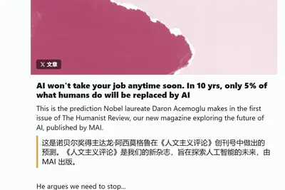
gpt-6chatgptintel
周活超 12 亿用户：OpenAI ChatGPT 升级 GPT-6 模型，互动式 AI 教你打麻将
IT之家 10 月 8 日消息，OpenAI 今天（10 月 8 日）在 X 平台发布推文，宣布面向所有 ChatGPT 用户， 推出 GPT-6 系列模型以及智能（Intelligent UI）。 OpenAI 的 ChatGPT 全球每周活跃用户数量超过 12 亿 ，不过此前停留在 GPT-5.6 系列。OpenAI 过去几个月陆续发布 GPT-6 Astra、GPT-6 Sol 和 Luna 模型，此前仅供 ChatGPT Work 和 Codex 使用。 OpenAI 同时推出智能用户界面，借助智能用户界面，GPT-6 能够根据用户的问题，灵活组
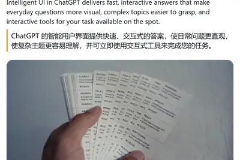
opensourceboldtakes
“Software is over”: Bold AI developer takes aim at Adobe with open source clones
Opus-built Creative Cloud alternatives are ambitious, free, and nowhere near finished.
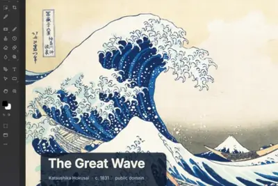
1.141codev1.141
微软发布 VS Code v1.141：清理“僵尸”Agent 会话等
IT之家 10 月 8 日消息，微软昨日（10 月 7 日）更新推出 Visual Studio Code 1.141，本次更新聚焦 AI 智能体（Agent）工作流管理， 重点改进会话存储清理、跨平台沙盒安全、多会话并排布局，以及多 GitHub Enterprise 实例登录支持。 清理“僵尸”Agent 会话方面，新版增加 Chat: Open Worktree Cleanup 命令，可列出所有非活跃 Agent 会话的工作树（worktree）占用空间，并支持按“闲置时长”筛选、手动删除或设置自动清理策略。IT之家附上相关图片如下： 当存储占用达
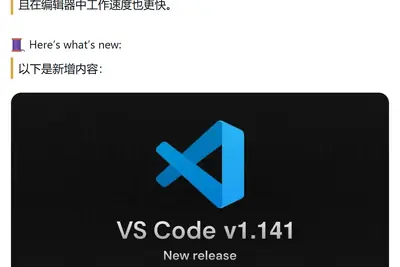
managersperformancewrite
Managers are using AI to write performance reviews – and it shows
Does AI use help or hurt feedback at work? Here’s what one survey found.
nousconfirmshit
Nous Research confirms it hit $1.5B valuation, launches AI agents for business users
The developer of Hermes Agent raised a $90 million Series B.
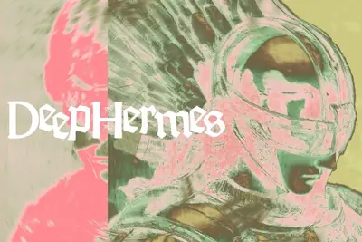
urlhttpscomments
Meta and Microsoft take steps to reduce employee usage of Claude AI
Article URL: https://www.rswebsols.com/news/meta-and-microsoft-take-steps-to-reduce-employee-usage-of-claude-ai/ Comments URL: https://news.ycombinator.com/item?id=49997161 Points: 251 # Comments: 243
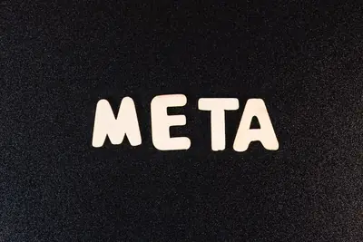
- Hacker News (100+) Meta and Microsoft take steps to reduce employee usage of Claude AI
- Hacker News (100+) GPT‑6 and Intelligent UI for everyone
thesedrivetoyota
These Researchers Made AI Drive a Toyota Corolla to Get In-N-Out
Three engineers put GPT, Claude, and Grok in charge of a real car. Only one of them was successful.
autopilotwindowsperplexity
微软描绘 Autopilot 全新蓝图：让 Windows AI 从“回答问题”走向“执行任务”
IT之家 10 月 8 日消息，微软今天召开 Surface 新品发布会，现场展示 Autopilot 未来方向。根据其设想，这款智能体将让 Windows AI 进一步实现自主化执行任务。 在微软的设想下，Autopilot 不再只是根据用户指令处理信息，而是能够理解目标、规划步骤，调用 Windows 系统及各种应用完成任务。用户可以通过自然语言描述需求， AI 负责查找信息、操作文件、配置系统或执行工作流程 ， 用户负责在关键节点确认或干预 。 IT之家了解到，Autopilot 定位与微软当今的“混合智能”理念相呼应：由人类提出目标并保留最终控制
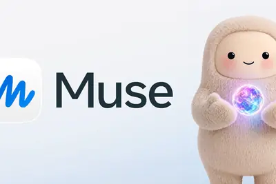
cudawin95d3d
英伟达黄仁勋回忆微软 Win95 往昔：没有 Windows 的话，CUDA 就不会诞生
IT之家 10 月 8 日消息，微软今日召开 Surface 新品发布会，CEO 纳德拉、Windows 负责人帕万 · 达武鲁里均登台演讲，英伟达 CEO 黄仁勋后半段压轴登场。 黄仁勋登台时，特意将自己的手机交给了助理，所以我们今天没办法看到这位大佬拨通什么神秘电话。 黄仁勋和纳德拉坐下来后聊起了 Windows 95。这款操作系统第一次集成了 DirectX，让开发者能够更加容易地为 Windows 系统开发游戏。 IT之家注意到，黄仁勋在聊天中表示：“ 如果没有 Windows ，就不会有 GeForce；如果没有 GeForce， CUDA 并
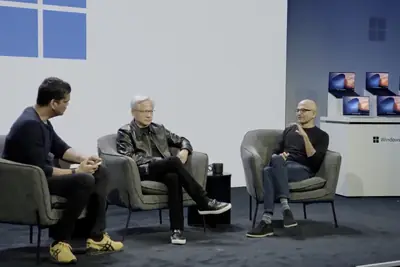
duringcrisesteens
ChatGPT for Teens keeps teens talking, even during mental health crises
ChatGPT’s teen safeguards are meant to protect vulnerable users, but new testing found the chatbot continues encouraging engagement during crises and potentially encourages unhealthy relationships with the AI itself.
datacentercudawindows
黄仁勋：英伟达当初正是因 Windows 而诞生
IT之家 10 月 8 日消息，太平洋时间 10 月 7 日上午 10 点（北京时间 10 月 8 日凌晨 1 点）在美国旧金山举办的发布会中，英伟达首席执行官黄仁勋表示： “英伟达当初正是因 Windows 而诞生”。 在本次活动中，微软首席执行官萨蒂亚 · 纳德拉、英伟达首席执行官黄仁勋和白宫前人工智能高级政策顾问斯里拉姆 · 克里希南三人展开了一场对话。 黄仁勋在开场时表示：“英伟达的创立是因为 Windows 系统。Windows 95 系统让 GPU 连接到 PC 成为可能，DirectX 对 PC 图形技术的早期发展至关重要。”这基本上就是英
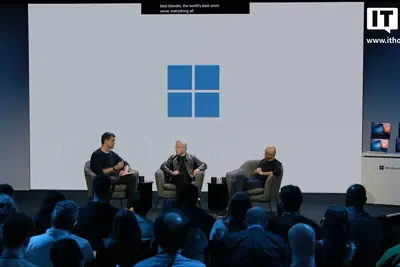
365windowsmicrosoft
纳德拉：Agent 365、Microsoft IQ 和 Copilot 将成为微软 AI 布局的关键支点
IT之家 10 月 8 日消息，太平洋时间 10 月 7 日上午 10 点（北京时间 10 月 8 日凌晨 1 点）在美国旧金山举办发布会上，微软首席执行官萨蒂亚 · 纳德拉（Satya Nadella）表示， 微软正尝试将“前沿生态系统”的三大理念带入 Windows。 这三大支柱分别是信任、智能，以及“融入人类抱负的 AI”（AI in the flow of human ambition）。纳德拉说：“今天的思路是，如何将这三项理念带入 Windows。我们将采用 Agent 365、Microsoft IQ 和 Copilot。”他将这三项产品和
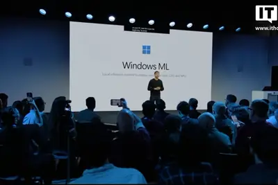
disrupttechcrunchpass
6 days to TechCrunch Disrupt 2026: Save on your pass before doors open
In 6 days, 10,000+ people from across the global startup and tech ecosystem will come together at San Francisco’s Moscone West for TechCrunch Disrupt 2026. If you’re planning to be one of them, register for your ticket before prices increase at the door. Save up to $100 on your p